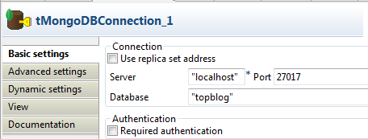
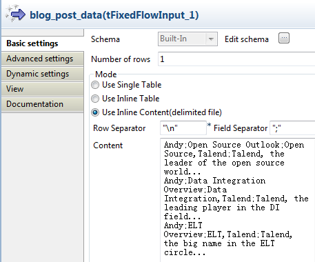
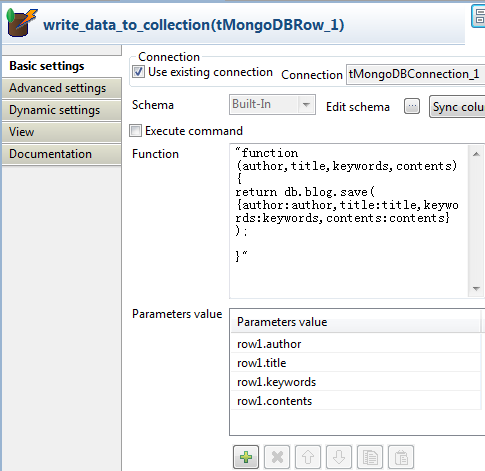
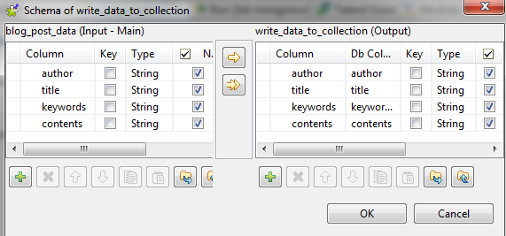
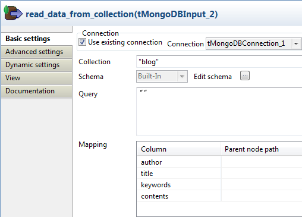
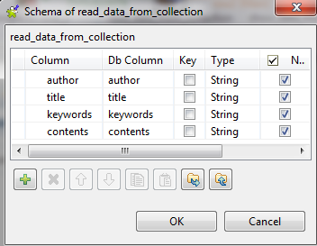
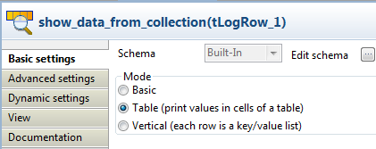

Warning
This component will be available in the Palette of the studio on the condition that you have subscribed to the relevant edition of Talend Big Data Studio.
|
Component family |
Big Data / MongoDB | |
|
Function |
tMongoDBRow executes the commands and functions provided by the Mongo database. | |
|
Purpose |
This component allows you to execute the commands and functions of the Mongo database. | |
|
Basic settings |
Use existing connection |
Select this check box and in the Component List click the relevant connection component to reuse the connection details you already defined. |
|
|
Use replica set address |
Select this check box to show the Replica address table. In the Replica address table, you can define multiple Mongo database servers for failover. Available when the Use existing connection check box is not selected. |
|
|
Server and Port |
Address and listening port of the database server. Available when the Use existing connection or Use replica set address check box is not selected. |
|
|
Database |
Name of the database. |
|
|
Required authentication |
Select this check box to enable the database authentication. |
|
|
Username and Password |
DB user authentication data. Available when the Required authentication check box is selected. |
|
Schema and Edit Schema |
A schema is a row description, i.e. it defines the number of fields that will be processed and passed on to the next component. If you are using Talend Open Studio for Big Data, only the Built-in mode is available. Click Edit Schema to make changes to the schema. Note that if you make changes, the schema automatically becomes built-in. Click Sync columns to retrieve the schema from the previous component connected in the Job. | |
|
|
Execute command |
Select this check box to enter Mongo commands in the Command field for execution. |
|
|
Function |
Enter Mongo functions in the Function field for execution. Not available when the Execute command check box is selected. |
|
|
Parameters value |
Click the [+] button to add lines as needed and then define the parameter values in the form of variables or constant values, for example row1.author or "Andy". Note that the parameter values correspond to the parameters defined in the Function field, in the same order. Not available when the Execute command check box is selected. |
|
Die on error |
This check box is cleared by default, meaning to skip the row on error and to complete the process for error-free rows. | |
| Advanced settings |
tStatCatcher Statistics |
Select this check box to collect the log data at the component level. |
|
Usage |
tMongoDBRow allows you to manipulate the Mongo database through the Mongo commands and functions. | |
|
Limitation |
n/a | |
This scenario creates the collection blog and writes post data to it through the Mongo functions.
Drop tMongoDBConnection, tFixedFlowInput, tMongoDBRow, tMongoDBClose, tMongoDBInput and tLogRow onto the workspace.
Rename tFixedFlowInput as blog_post_data, tMongoDBRow as write_data_to_collection, tMongoDBInput as read_data_from_collection and tLogRow as show_data_from_collection.
Link tMongoDBConnection to tFixedFlowInput using the OnSubjobOk trigger.
Link tFixedFlowInput to tMongoDBRow using a Row > Main connection.
Link tFixedFlowInput to tMongoDBInput using the OnSubjobOk trigger.
Link tMongoDBInput to tMongoDBClose using the OnSubjobOk trigger.
Link tMongoDBInput to tLogRow using a Row > Main connection.

Double-click tMongoDBConnection to open its Basic settings view.
In the Server and Port fields, enter the connection details.
In the Database field, enter the name of the Mongo database.
Double-click tFixedFlowInput to open its Basic settings view.
Select Use Inline Content (delimited file) in the Mode area.
In the Content field, enter the data to write to the Mongo database, for example:
Andy;Open Source Outlook;Open Source,Talend;Talend, the leader of the open source world... Andy;Data Integration Overview;Data Integration,Talend;Talend, the leading player in the DI field... Andy;ELT Overview;ELT,Talend;Talend, the big name in the ELT circle...
Double-click tMongoDBRow to open its Basic settings view.
Select the Use existing connection check box.
In the Function field, enter the Mongo function to create the collection blog and insert data to it:
"function(author,title,keywords,contents){ return db.blog.save( {author:author,title:title,keywords:keywords,contents:contents} ); }"Click the [...] button next to Edit schema to open the schema editor.
Click the [+] button to add four columns in the right part, namely author, title, keywords and contents, with the type of String.
Click to copy all the columns to the input table.
Click OK to close the editor.
In the Parameters value table, click the [+] button to add four lines and enter the values in sequence: row1.author, row1.title, row1.keywords and row1.contents. By doing so, data of row1 will be transferred to the parameters defined in the function.
Double-click tMongoDBInput to open its Basic settings view.
Select the Use existing connection check box.
In the Collection field, enter the name of the collection, namely blog.
Click the [...] button next to Edit schema to open the schema editor.
Click the [+] button to add four columns, namely author, title, keywords and contents, with the type as String.
Click OK to close the editor.
Double-click tLogRow to open its Basic settings view.
In the Mode area, select Table (print values in cells of a table for better display.